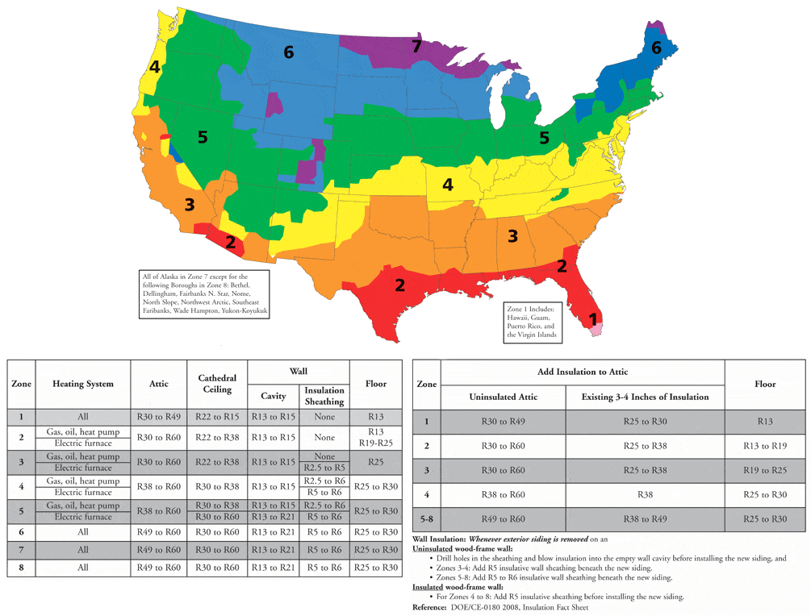
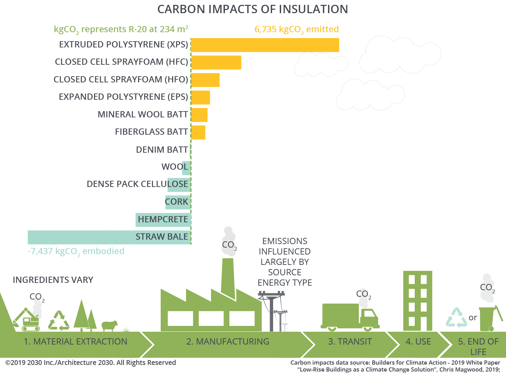

Insulation
Insulation is a fundamental part of the building enclosure.
Overview
{kind=link}
The best insulation for each location depends on a number of factors, including cost, ease of installation, available space, and the material's resistance to moisture.
The most common types of insulation used in residential construction are fiberglass batts, cellulose, spray polyurethane foam, and rigid insulation. Insulation materials are usually sold with a label indicating their R-value. The higher the R-value, the more effective the insulation. To achieve the R-value on the label, however, the insulation must be installed without compression or voids.
Thermal Bridging
{kind=link}
Although residential wall insulation is traditionally installed in stud cavities, the best place to locate wall insulation is outside of the frame. This reduces the thermal bridging effect that studs have in a wall, each piece of framing is a thermal bridge through the insulation. These thermal bridges seriously degrade the performance of the wall. The thermal bridge effect can be partially addressed by using rigid foam sheathing, usually 1 or 2 inches of XPS or polyisocyanurate. Even better are wall designs that place all of the insulation — 6 to 10 inches of rigid foam — outside of the framing. When insulation is outside of the frame, framing materials stay warm and dry.
Adding 1 in. of R-5 insulation to a 2×6 wall insulated with fiberglass batts increases the effective R-value of the wall from 14.4 to 19.4, a 35% gain with only a 15% increase in wall thickness. Adding 2 in. of foam raises the R-value from 14.4 to 23.8, an improvement of 65%. A layer of insulating foam on the outside of walls also reduces the risk of condensation by raising the dew point of the surface where water vapor is likely to collect.
Insulation Types
Doubling the thickness of insulation will double the insulation's R-value, cutting heat loss in half. Each time the insulation layer is doubled in thickness, this rule applies. The energy saved per year by doubling insulation from R-10 to R-20, however, will be considerably more than the energy saved by doubling insulation from R-20 to R-40, because of the law of diminishing returns. In some cases, like an attic, it's worth piling on more insulation because there is plenty of room. It's much more expensive to add that much insulation to exterior walls.
In any case, green builders almost always exceed minimum code requirements for insulation thickness. Many energy consultants now recommend that cold-climate homes include R-60 ceilings, R-40 above-grade walls, R-20 basement walls, and R-10 basement slabs.
- Batts and blankets: R-3.1 to R-4.1 per in.
- Blown-in and loose-fill insulation: R-2.6 to R-4.2 per in.
- Rigid foam: R-3.6 to R-6.8 per in.
- Closed-cell spray foam: R-6 to R-6.8 per in.
- Open-cell spray foam: R-3.5 to R-3.6 per in.
Batts
Of all available insulation materials, fiberglass batts are the most permeable to air leakage—so permeable that fiberglass is used to make furnace air filters. Because it doesn't restrict air flow, fiberglass is often singled out and derided for its poor performance. As long as fiberglass is installed in a house with an adequate air barrier, it will perform well. Fiberglass performs best when installed in a framing cavity (for example, a stud bay or joist bay) with an air barrier on all six sides.
Mineral wool refers to both rock wool, which is spun from molten filaments of basalt or another type of rock, and slag wool, made from blast furnace slag. Mineral wool contains an average of 70% post-industrial recycled content and needs no chemical flame retardants. Available in unfaced batts, semi-rigid panels, and for use in blow-in applications in walls and attics. In panel form, it can be used below grade and as a continuous layer of insulation on exterior walls to reduce thermal bridging. Mineral wool is air and vapor permeable and provides high fire resistance.
Blown-In / Loose Fill
Blown-in cellulose is the first choice of many green builders for insulating walls, flat ceilings, and sloped ceilings. Because cellulose insulation is made from recycled newspaper, its manufacture has a positive environmental impact. Cellulose is inexpensive and better than fiberglass batts at reducing air infiltration.
Rigid Foam
Rigid foam insulation is a more effective air barrier than batts, blankets, or blown-in insulation, especially if the seams between sheets are carefully sealed with caulk or tape.
- Expanded polystyrene (EPS) is a versatile insulation that can be used below grade, on walls, or on roofs. EPS is less expensive than XPS or polyiso. If the correct density is chosen for the application, EPS is not affected by moisture.
- Extruded polystyrene (XPS) shares many of the strengths of EPS. However, it is stronger, denser, smoother, more water-resistant, and has a higher R-value per inch (R-5 for XPS versus R-3.8 for EPS). It also costs more than EPS.
- Polyisocyanurate has the highest R-value per inch (R-6.5 to R-6.8) of any rigid insulation. Its blowing agent is environmentally benign, and it is free of the brominated flame-retardant chemicals that taint polystyrene. However, polyiso easily absorbs water, so it can't be used below grade. Cold climate performance is also not as good as other alternatives.
A good comparison on when to use which can be found at Ecohome.net
Spray Foam
Closed-cell spray polyurethane foam performs better than any other insulation. It has a high R-value per inch (R-6.2 to R-6.5), it's impervious to moisture, and it's an effective vapor retarder. It is also an excellent air barrier. Closed-cell spray polyurethane foam can be used under slabs, on below-grade or above-grade walls, in ceilings, or even as roofing. It is also the most expensive residential insulation available.
Radiant Barrier
Radiant barriers are materials (for example, aluminum foil) with a low-emissivity (low-e) surface. Although radiant barriers have a few applications in residential construction—they are sometimes integrated with roof sheathing—they are rarely cost-effective when compared to conventional insulation options. Radiant barriers are ineffective if the surface is touching another material – they need to face an air space. For example, compressed bubble wrap installed between soil and concrete does not contain a meaningful air space.
Walls
Wood-framed walls can be insulated with cavity insulation (fiberglass batts, mineral wool, cellulose, or spray polyurethane foam), on the interior (with rigid foam board), on the exterior (with rigid foam board or spray polyurethane foam), or with a combination of approaches (for example, some cavity insulation and exterior foam sheathing).
Poorly installed insulation will not achieve the energy savings that its rated R-value would suggest. A California study concluded that a 4% void in fiberglass batts resulted in a 50% decrease in insulation effectiveness. So be sure every space is filled, and every hole is sealed.
Attic
{kind=link}
Flat ceilings under unconditioned attics can be insulated with fiberglass batts, blown fiberglass, or blown cellulose, but cellulose works best—especially in very cold temperatures when convective loops can degrade the performance of fiberglass. Cellulose is inexpensive, effective, and green. Regardless of the type of insulation used, more is always better, and it's usually an inexpensive upgrade as space is less of a limiting factor than it would be for walls.
Spray polyurethane foam can also be used to insulate a flat ceiling, although at a much higher cost than cellulose. An advantage of spray foam is that it air-seals as it insulates. With all types of attic insulation, air-sealing before insulating is almost more important than type and depth of insulation.
Attic-floor insulation should extend over the top plates of perimeter walls. To provide enough room for the necessary depth of attic insulation, be sure to specify raised-heel roof trusses. Locating insulation at the attic floor has several advantages over locating insulation along the slope of the roof:
- It's cheaper, easier, and faster to install thick insulation at the attic floor.
- Unconditioned attics are easier to vent than insulated rafter bays.
- It's easier to detect and pinpoint roof leaks when the attic is unconditioned.
As with insulating on the outside with walls, insulating on top of the roof sheathing interrupts thermal bridging and provides better thermal performance. If you are looking at increasing your homes performance or have cathedral ceilings in your home making insulating the attic floor difficult, this could be a better option.
Environmental Impact
{kind=link}
Insulation is one of the most important components of any environmentally responsible building because it reduces energy consumption and therefore pollution. More insulation means less coal is burned at the power plant, and less gas or oil is burned in a furnace. In fact, with good design and appropriate levels of insulation, you can minimize (or even eliminate) the need for central heating and cooling in many buildings. This principle is demonstrated in all superinsulated buildings, including Passive House buildings. In this sense, any insulation material is a "green" product. But different insulation types have different carbon footprints to manufacture. Green builders need to focus on choosing which insulation is greener or better for a particular application.